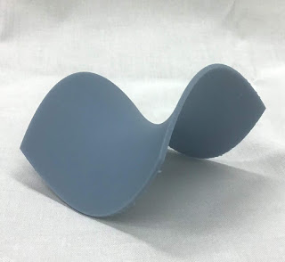
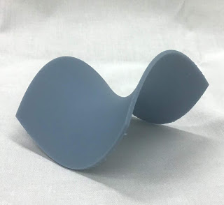
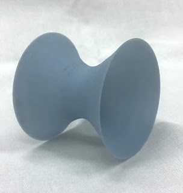
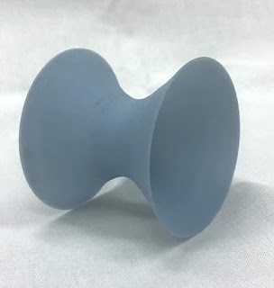

27 Lines on the Clebsh Surface


In algebraic geometry, there is a remarkable theorem that states that any smooth, cubic surface has 27 lines that lie on it. In collaboration with postdoc Nathan Fieldsteel, we managed to 3D print the Clebsh surface. Using Sage to generate the surface and Blender to make it look a little more refined, we used the University of Kentucky Math Lab's Form 2 3D printer to print it. After a couple of test prints, we finally got a fantastic model to hold and display. Photos are courtesy of Nathan Fieldsteel and Dave Jensen.
The Twisted Cubic
The twisted cubic can be expressed parametrically with \( t \rightarrow (t, t^2, t^3) \). If considering this curve in \( \mathbb{R}^3 \), then in particular, projecting the twisted cubic along any dimension yields a different polynomial curve.
Calculus III
 

 

For many students, the higher dimensionality of multivariate calculus can be a challenge to handle. By creating interactive and tangible objects related to some of the objects, the goal is to make the concepts more accessible and to provide some intuition for students. Because much of Calculus III begins in \( \mathbb{R}^3 \), many of the surfaces can actually be 3D-printed. Photos are courtesy of Christina Osborne.